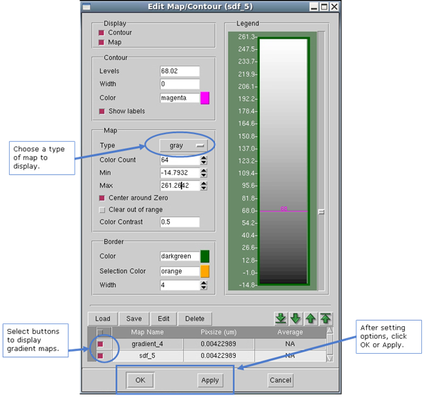

This section
guides you through the steps to display the gradient maps superimposed
on your layout using Calibre WORKbench.
Procedure
- In
the Calibre WORKbench layout window double-click on the gradient
map in the layout window (alternatively select ).
This invokes the Edit Map/Contour dialog box shown in Figure 1.
Figure 1. Edit Map/Contour
- Turn off the gradient map and leave the sdf map on.
- Click Apply in the Edit Map/Contour dialog
box. The display changes in Calibre WORKbench to display the sdf
map overlay only.
- Turn the gradient map back on for the
next procedure.
- Click Apply or OK in the Edit Map/Contour
dialog box. The display resets in Calibre WORKbench to re-display
the gradient map.
Results
You have modified the display of the
layout’s gradient and sdf maps.